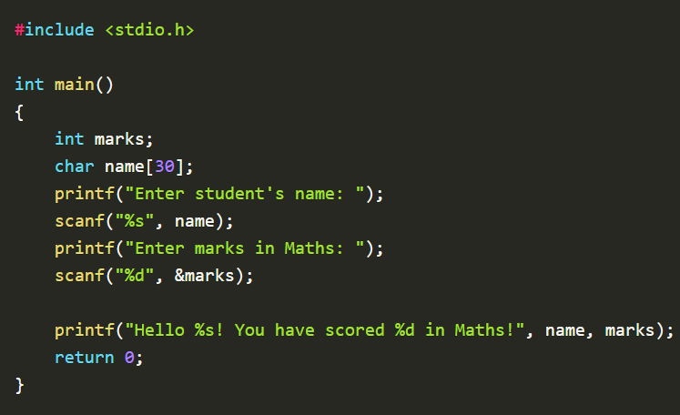

User Input / Output
- the format specifier of the variable (as shown in the example below).
- the reference operator (&myNum), which stores the memory address of the variable. This is where the input data goes to.
We have already learned how the printf() function is used to output values in C. Another method, which goes by the name, scanf(), is used to get user input.
The scanf() function takes two arguments:
One such example demonstrates how a program takes input from the user.

Input
Output
You must note that we didn’t have to specify the reference operator (&) in cases of strings if we have specified the size of the strings already. This is an exception.